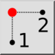
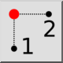
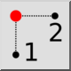
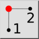

X/Y dos Pontos
Barra de Ferramenta / Ícone:
 

Menu: Snap > X/Y dos Pontos
Atalho: ., X
Comandos: .x
Esta é uma tradução automática.
Barra de Ferramenta / Ícone:
 

Menu: Snap > X/Y dos Pontos
Atalho: ., X
Comandos: .x
Esta ferramenta de snap permite extrair uma cota (por exemplo, X) da posição
de uma entidade existente e a outra cota (por exemplo, Y) da posição de outro
objeto.
Isto pode, por exemplo, ser usado para localizar o centro de um
retângulo.
Este conceito é também referido como "combinação de coordenadas",
"filtragem de pontos" ou "filtragem de coordenadas".